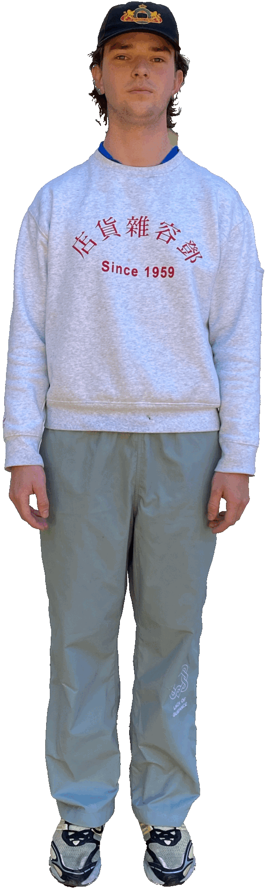

introduction


Hello!
My name is Jim Antonio Tashu Bakker. 21 years old. Born and raised in Amsterdam (I know… No one knew that already).
Lately my life has been quite chaotic. In these few pages I tried to show who I am (and who I want to be), among the disorder of a cluttered desktop.